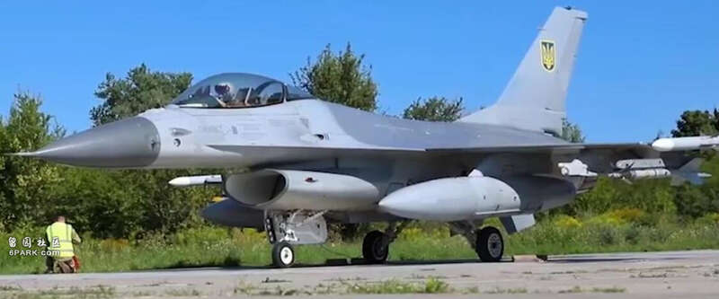
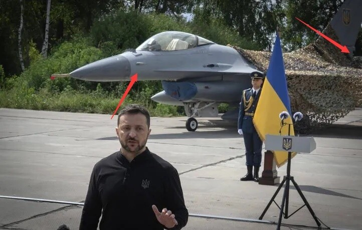
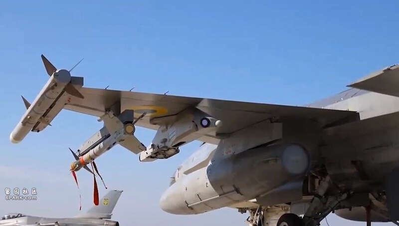

继上月底出现在西部城市利沃夫上空之后，乌克兰空军翘首以盼的F-16战机，终于在本月4日以官方公开的形式亮相。
尽管在2022年俄乌冲突全面爆发后不久，乌克兰方面就公开呼吁北约国家援助F-15、F-16等美制战机，但这一过程经历了多次拉扯与反复，终于在去年进入了实质执行阶段。丹麦、荷兰、比利时、挪威等国决定向乌克兰提供其空军退役的二手F-16，乌克兰空军飞行员也得以前往丹麦、英国乃至美国参加F-16战机改装培训。
乌克兰国防部方面就此次F-16战机的正式到来发布了官方视频，视频显示乌克兰总统泽连斯基亲自出席了乌空军接收F-16的仪式并发表讲话。
在泽连斯基现场讲话时，首批两架F-16包括机翼的一大部机身分仍由伪装网覆盖，不过该视频也包含了这些战机没有伪装网覆盖时的样子，包括地面停放、滑行和起飞画面。从视频中F-16的特征来看，其中一架机头左侧带有一盏探照灯，在承诺援乌F-16战机的四个国家中，丹麦空军的全部F-16和挪威空军的单座型F-16A具备此特征，这盏灯的主要用途是在夜间防空拦截时为目视识别提供照明（美国空军国民警卫队用于拦截轰炸机的F-16 ADF也具备类似特征，这批飞机后来还提供给了意大利、泰国、约旦等国）。垂尾根部则为没有着陆减速伞的“短基座”配置，因此该架战机可确定为丹麦提供的F-16AM。

机头左侧探照灯和较短的垂尾根部基座指向了这是一架来自丹麦的二手F-16视频截图
此外现场另一架则是不具备左侧探照灯的单座F-16A，由于同样是不含减速伞舱的“短垂尾基座”，可能是未经加装伞舱的早期批次荷兰F-16A。不过，从互联网上所流传另外拍摄的乌空军F-16飞行照片来看，目前至少有2架仍可以确定是符合丹麦特征的飞机，因此仍可判断首批飞机大部分是由丹麦提供的。

现场左侧这架既没有探照灯也没有垂尾根部减速伞舱的F-16则可能是荷兰库存的早期F-16A社交媒体
此次展示F-16另一特点是，翼下安装了由丹麦Terma公司生产的“综合吊挂系统”（PIDS）或“综合电子战吊挂系统”（ECIPS），该系列产品在本身作为弹药挂架（此次并未挂载弹药）、不占用挂点的同时，还具备多个无线电/光学传感器以提供全向导弹迫近告警，能够为F-16提供重要的补充生存能力，还包含可选的红外/箔条干扰弹发射器和内置电子自卫设备。

左侧机翼从外至内分别为（翼尖滑轨上的）AIM-120B、AIM-9M、Terma“综合吊挂系统”多功能挂架和370加仑可抛弃副油箱视频截图
不过在弹药方面，此次F-16展示的则较为保守，采用了“二中二近”的对空挂载，翼根加挂了两只370加仑可抛弃副油箱，挂载形式也是F-16系列常见的、一对AIM-120挂在翼尖滑轨、AIM-9挂在最外侧翼下挂架的配置。
不过值得注意的是，此次乌空军F-16展示挂载的两种导弹，为型号较老的AIM-9M“响尾蛇”红外格斗空空导弹与AIM-120B主动雷达制导中距空空导弹。尽管早在2004年，丹麦空军就从美国购买了AIM-9X“响尾蛇”，并在其后数年再次引进了AIM-9X BlockⅡ，也曾经在F-16上挂载使用；2018年和今年，丹麦还购买了AIM-120C-7和AIM-120C-8两款更先进的中距导弹，而这些则显然是丹麦为了F-35机队而准备的了。总之乌克兰尽管收到了梦寐以求的F-16，大概还要在未来相当长一段时间使用“老弹”作战，在这当中，依靠官称拦截距离仅有80千米的AIM-120B，可能难以在与俄军战机的制空较量中取得“立竿见影”的效果。